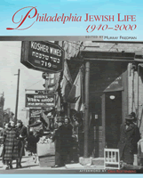

A new edition of the classic history of Jewish cultural and political life in Philadelphia
A new edition of the classic history of Jewish cultural and political life in Philadelphia


 A new edition of the classic history of Jewish cultural and political life in Philadelphia
A new edition of the classic history of Jewish cultural and political life in Philadelphia

|  |
Philadelphia Jewish Life, 1940-2000edited by Murray Friedman, afterword by Dan Rottenbergcloth EAN: 978-1-56639-999-9 (ISBN: 1-56639-999-8) |
In a city with a long history of high social barriers and forbidding aristocratic preserves, Philadelphia Jews, in the last half of the twentieth century, became a force to reckon with in the cultural, political and economic life of the region. From the poor neighborhoods of original immigrant settlement, in South and West Philadelphia, Jews have made, as Murray Friedman recounts, the move from "outsiders" to "insiders" in Philadelphia life. Essays by a diverse range of contributors tell the story of this transformation in many spheres of life, both in and out of the Jewish community: from sports, politics, political alliances with other minority groups, to the significant debate between Zionists and anti-Zionists during and immediately after the war.
In this new edition, Friedman takes the history of Philadelphia Jewish life to the close of the twentieth century, and looks back on how Jews have shaped—and have been shaped by—Philadelphia and its long immigrant history.
Excerpt available at www.temple.edu/tempress
Foreword – E. Digby Baltzell
Acknowledgments
Introduction to the New Edition: The Eighties to a New Century – Murray Friedman and Andrew Harrison
Introduction: From Outsiders to Insiders? Philadelphia Jewish Life, 1940-1985, Murray Friedman
1. Philadelphia Jewry, the Holocaust and the Birth of the Jewish State
i. Philadelphia Jewry and the Holocaust – Philip Rosen, Robert Tabak, and David Gross
ii. Four Fateful Years: Philadelphia's Jews and the Creation of the State of Israel – Philip Rosen
2. The Opposition to Zionism: The American Council for Judaism Under the Leadership of Rabbi Louis Wolsey and Lessing Rosenwald – Thomas A. Kolsky
3. Philadelphia Jews and Radicalism: The American Jewish Congress Cleans House, Paul Lyons
4. From Periphery to Prominence: Jews in Philadelphia Politics, 1940-1985 – Dennis Clark
5. An Ambivalent Alliance: Blacks and Jews in Philadelphia, 1940-1985 – Murray Friedman and Carolyn Beck
6. Wynnefield: Story of a Changing Neighborhood – David P. Varady
7. A Place to Live: The Jewish Builders of Northeast Philadelphia – Peter Binzen
8. Home and Haven: Soviet Jewish Immigration to Philadelphia, 1972-1982 – Nora Levin
9. Changing Styles of Synagogue Life: Conservative Judaism in Philadelphia – Sidney H. Schwartz
10. A Generation of Learning: Jewish Education in Philadelphia, 1940-1980 – Diane A. King, William B. Lakritz, and Saul P. Wachs
11. The Jewish Federation of Greater Philadelphia: A Quarter Century of Change – Ernest M . Kahn
12. From A To "Zink": Philadelphia Jews in Sports – Ron Avery
13. Jews and the Cultural Revival of Philadelphia – Don Harrison
Afterword: The Once and Future City-One Jewish Philadelphian's Odyssey – Dan Rottenberg
Notes
About the Contributors
Index
 | Murray Friedman (1926-2005) was Middle-Atlantic Regional Director of the American Jewish Committee and Director of the Myer and Rosaline Feinstein Center for American Jewish History at Temple University. He was the author or editor of numerous books, including, most recently (with Albert D. Chernin), A Second Exodus: The American Movement to Free Soviet Jews. Read a tribute from The Temple Times. |
Contributors: Ron Avery, E. Digby Baltzell, Carolyn Beck, Peter Binzen, Dennis Clark, David Gross, Andrew Harrison, Don Harrison, Ernest M. Kahn, Diane A. King, Thomas A. Kolsky, William B. Lakritz, Nora Levin, Paul Lyons, Philip Rosen, Dan Rottenberg, Sidney H. Schwartz, Robert Tabak, David P. Varady, Saul P. Wachs, and the editor.
Jewish Studies
American Studies
Philadelphia Region
© 2015 Temple University. All Rights Reserved. This page: http://www.temple.edu/tempress/titles/1673_reg.html.